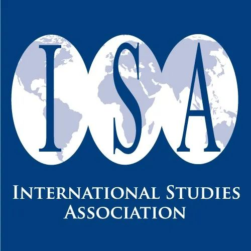

收录于合集 #特刊：ISA主席简介 4个


【简介】 国际研究协会（ISA）第四十六任至第五十八任主席介绍
【编译】 李源 张曼娜 刘瑛琛 常佳艺 任潇依 赵怡雯 杨稚珉 朱晓洁
【审校】 李源
【排版】 谭誉豪
46. J. Ann Tickner
ISA第四十六任（2006-2007）主席，南加州大学国际关系学院名誉教授，布兰迪斯大学政治学博士（1983），耶鲁大学国际关系硕士（1960），伦敦大学历史学学士（1959）。研究领域包括国际关系理论、和平与安全以及女性主义国际关系学。根据2011年的TRIP调查，她在过去20年对国际关系学科影响最大的学者中排名第19位。其著作主要有《国际关系中的女性主义之旅》（ A Feminist Voyage Through International Relations ）《女性主义与国际关系：过于、现在与未来的对话》（ Feminism and International Relations: Conversations about the Past, Present and Future ，与Laura Sjoberg合著）《国际关系中的性别：实现全球安全的女性主义视角》（ Gender in International Relations: Feminist Perspectives on Achieving Global Security ）等。
47. Jack S. Levy
ISA第四十七任（2007-2008）主席，罗格斯大学政治学教授，威斯康星大学麦迪逊分校政治学博士（1976）、硕士（1972），哈维·穆德学院物理学学士（1970）。2005年至2006年担任美国和平学学会（Peace Science Society）主席。研究领域包括战争原因、外交政策分析、定性研究方法与政治心理学。1977年其博士论文获海伦·德怀特·里德最佳国际关系论文奖（Helen Dwight Reid Award），2000年获ISA外交政策分析分会杰出学者奖，2008年获乔万尼·萨托利荣誉奖（Honorable mention for Giovanni Sartori Award）。其著作主要有《第一次世界大战的爆发：结构、政治与决策》（ The Outbreak of the First World War: Structure, Politics, and Decision-Making ，与John A. Vasquez合著）《牛津政治心理学手册（第二版）》（ The Oxford Handbook of Political Psychology ，与Leonie Huddy and David O. Sears合著）《解释战争与和平：案例研究与必要条件反事实推理》（ Explaining War and Peace: Case Studies and Necessary Condition Counterfactuals ，与Gary Goertz合著）《现代大国体系中的战争：1495-1975》（ War in the Modern Great Power System, 1495-1975 ）。
48. Nils Petter Gleditsch
ISA第四十八任（2008-2009）主席，奥斯陆和平研究所（PRIO）研究教授，曾于1972年与1977-1978年任奥斯陆和平研究所所长，挪威科技大学政治学名誉教授。1968年获奥斯陆大学社会学硕士学位。著作有：《武装冲突的未来》（ The Future of Armed Conflict ）《走向更和平的世界？》（ Mot en mer fredelig verden? ）等。
49. Thomas G. Weiss
ISA第四十九任（2009-2010）主席。纽约城市大学首席教授，拉尔夫·邦奇国际研究所荣誉董事。在普林斯顿大学获得博士学位。著作有：《反思全球治理》（ Rethinking Global Governance ）《联合国与变化中的世界政治》（ The United Nations and Changing World Politics ）《这个世界没有联合国会更好吗》（ Would the World Be Better without the UN? ）等。
50. David A. Lake
ISA第五十任（2010-2011）主席，现为加州大学圣迭戈分校政治科学系杰出教授。1984年博士毕业于康奈尔大学。其在国际关系理论与国际政治经济学领域发表了广泛的著作，主要有《国家建设者的困境：关于外部干预的限制》（ The Statebuilder’s Dilemma: On the Limits of External Intervention ）（2016）《国际关系中的等级制》（ Hierarchy in International Relations ）（2009）《权力，保护与自由贸易：美国商业战略的国际源泉（1887-1939）》（ Power, Protection, and Free Trade: International Sources of U.S. Commercial Strategy, 1887-1939 ）(1988)等。此外，他还曾担任《国际组织》（ International Organizations ）期刊的联合主编（1997-2001），国际政治经济学会创会主席（2005-2012），美国人文与科学院院士（2006），美国政治学会主席（2016-2017）等。
51. Beth Simmons
ISA第五十一任（2011-2012）主席，现为宾夕法尼亚大学法学院教授。雷德兰大学哲学与政治科学学士，芝加哥大学国际关系硕士，哈佛大学政府学硕士、博士。其在哈佛求学期间曾受著名国际关系学者罗伯特·基欧汉指导。西蒙斯以其对两次世界大战期间的国际政治经济学、政策的全球扩散以及国际法对人权的影响等研究而享誉世界。其主要著作《谁来调整：两次世界大战之间对外经济政策的国内根源》（ Who Adjusts? Domestic Sources of Foreign Economic Policy During the Interwar Years ）（2004）与《人权动员：国内政治中的国际法》（ Mobilizing for Human Rights: International Law in Domestic Politics ）（2009）都曾获得美国政治学会（APSA）的伍德罗·威尔逊奖（ Woodrow Wilson Award ）。此前，她还曾在杜克大学、国际货币基金组织、加州大学伯克利分校、哈佛大学等学校或机构任职。
52. Etel L. Solingen
ISA第五十二任（2012-2013）主席，加州大学欧文分校教授，并担任托马斯和伊丽莎白·蒂尔尼和平研究主席（Thomas and Elizabeth Tierney Chair in Peace Studies）。1987年获得加州大学洛杉矶分校博士学位，其著作《核逻辑:东亚和中东的对比路径》（ Nuclear Logics: Contrasting Paths in East Asia and the Middle East.）获得2008年伍德罗·威尔逊基金会奖（Woodrow Wilson Foundation Award）。
53. Harvey Starr
ISA第五十三任（2013-2014）主席，南加州大学达格·哈马舍尔德名誉教授（Dag Hammarskjöld Professor Emeritus）。1971年获得耶鲁大学博士学位。著作有：《地缘政治:空间、地点和国际关系》（ On Geopolitics: Space, Place, and International Relations ）《现代世界的国家失败》（ State Failure in the Modern World ）《以色列冲突体系:分析方法》（ The Israeli Conflict System: Analytic Approaches ）等。
54. Amitav Acharya
ISA第五十四任（2014-2015）主席，美利坚大学教授。1987年获得澳大利亚莫道克大学博士学位。曾供职于新加坡国立大学、哈佛大学亚洲中心、哈佛大学肯尼迪政府学院、南洋理工大学等。其研究在亚洲区域主义和人类安全的政策制定方面具有影响力，并著有《东南亚的形成》（ The Making of Southeast Asia ）《构建全球秩序》（ Constructing Global Order ）等书。
55. Paul Diehl
ISA第五十五任（2015-2016）主席，得克萨斯大学达拉斯分校教授。1983年获得密歇根大学博士学位。主要研究领域是战争的起因、联合国维和行动和国际法。曾担任《国际交流》（ International Interactions ）期刊主编和国际和平学学会（the Peace Science Society （International））主席，主要著作有《和平之谜》（ The Puzzle of Peace ）《国际竞争中的战争与和平》（ War and Peace in International Rivalry ）等。
56. TV Paul
ISA第五十六任（2016—2017）主席，麦吉尔大学国际关系专业教授，主要研究领域为国际安全、区域安全和南亚研究，并教授相关课程，他著有18本书和近75篇期刊文章。1980年在印度喀拉拉邦大学的玛哈拉加斯学院获得政治学硕士学位，1980年至1985年在新德里的印度报业托拉斯通讯社(PTI)担任记者。在此期间，他在尼赫鲁大学国际研究学院（SIS）完成了哲学硕士学位的学习。1986年他进入加州大学洛杉矶分校（UCLA）攻读研究生，并于1991年6月获得政治学博士学位。1991年9月开始在麦吉尔大学任教，1995年被聘为助理教授，并被晋升为副教授，2000年被聘为正教授。保罗是加拿大蒙特利尔大学国际和平与安全研究中心（CIPSS）的创始主任（2009-2012年）。目前，他担任乔治城大学出版社<《〈南亚国际事务〉丛书》的主编，并担任多家学术期刊的编委。主要著作有《非对称冲突:弱国引发战争》（ Asymmetric Conflicts: War Initiation by Weaker Powers ）《权力与谨慎：国家放弃核武器的原因》（ Power versus Prudence: Why Nations Forgo Nuclear Weapons ）；《世界秩序中的印度》（ India in the World Order ）；《不使用核武器的传统》（ The Tradition of Non-use of Nuclear Weapons ）；《全球化与国家安全国家》（ Globalization and the National Security State ）等。
57. Brett Ashley Leeds
ISA第五十七任（2017-2018）主席，莱斯大学政治学系教授、系主任。主要研究国际机构和合作协议的设计与影响、军事同盟的政治影响以及国内政治变革对外交政策的影响，于2008年荣获卡尔·多伊奇奖（Karl Deutsch Award）。鉴于其在国际关系与和平研究领域的突出成就，2019年美国政治学协会授予其“冲突过程（Conflict Processes）”部门的终身成就奖。其作品《联盟与武器：对安全的追求》（ Alliances and Arms: The Quest for Security ）刊载于《国际研究百科全书（第十二版）》（ The International Studies Encyclopedia，12 vols ），此外还发表有《安全贸易：军事同盟和经济协议》（ Trading for Security: Military Alliances and Economic Agreements ）《领导者更替与外交政策变化：联合国的社会利益、国内机构和投票》（ Leadership Turnover and Foreign Policy Change: Societal Interests, Domestic Institutions, and Voting in the United Nations ）《衡量领导者支持来源的变化：CHISOLS数据集》（ Measuring Change in Source of Leader Support: The CHISOLS Dataset ）等多篇期刊论文。
58. Patrick James
ISA第五十八任（2018-2019）主席，马里兰大学博士，现任南加州大学国际关系学教授和国际研究中心主任，出版专著18本，发表论文120余篇，主要研究方向为国际冲突与战争、比较政治学。曾获得斯坦福大学胡佛研究所路易斯·戴尔和平奖、加拿大大使馆高级学者奖、中西部国家研究协会得昆西·莱特学者奖。曾任犹他州州立大学政治学米尔顿·R·梅里尔主席、爱荷华州政治科学家会议（the Iowa Conference of Political Scientists）主席、《国际研究季刊》（ International Studies Quarterly ）编辑。
**
**
**
**
**
**
添加 “国小政”微信
获取最新资讯


国政学人
支持学术公益与知识传播
微信扫一扫赞赏作者 __赞赏
已喜欢，对作者说句悄悄话
取消 __
发送给作者
发送
最多40字，当前共字
上一页 1/3 下一页
长按二维码向我转账
支持学术公益与知识传播
受苹果公司新规定影响，微信 iOS 版的赞赏功能被关闭，可通过二维码转账支持公众号。